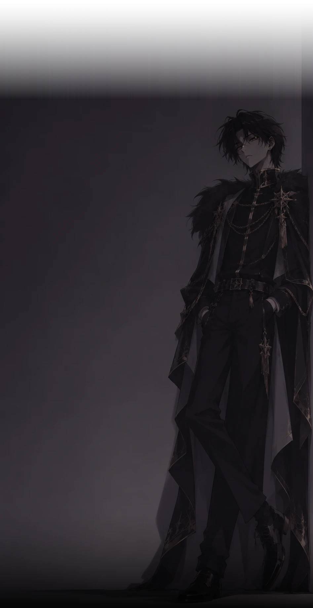

KASHIU. / Personal Archive
梦 · 星空 · 秋
Edition 2026
01 — 介绍 / Between code & poetry
KASHIU.
在代码与诗歌之间，
构建自己的世界。
学者·作者·探索者

阅读世界。
联系世界。
Scroll to explore
© 2026
01
关于Manifesto
Identity
Kashiu 不止是我的网名，
也是我笔下的角色，
寄托了我对未来的我的期望。
在小说里，它的意思是「杀死命运」。
从前，我是一个宿命论的囚徒，
我希望我能打破枷锁，去向远方。
A name for what I have not yet become.
我现在是一个人类，对地球，人类，动物，美食等领域有着广泛的兴趣。
这么说你很勇喽，让我康康 →
04
诗Poetry
口水盆 · Since 2024
✳
侧写In Numbers
Data of a curious life—天
持续记录日记
Since 2025.01.21
0
体验过的游戏
0
TapTap 游戏时长
小时
∞
保持好奇
Stay curious
✦
一直烦串不串
杂种，你有什么资格与本王对话。
07
联系Contact
Say hello写作、AI、游戏，或者发点抽象东西。
不一定秒回，但会看。
♡关于相识 / Connection
—我愿意认识你，至于我们会成为怎样的朋友，可以交给时间。
不用先想好话题，也不用担心说错。
愿意开口，就已经是开始了。
写封信 / Send a note ↗